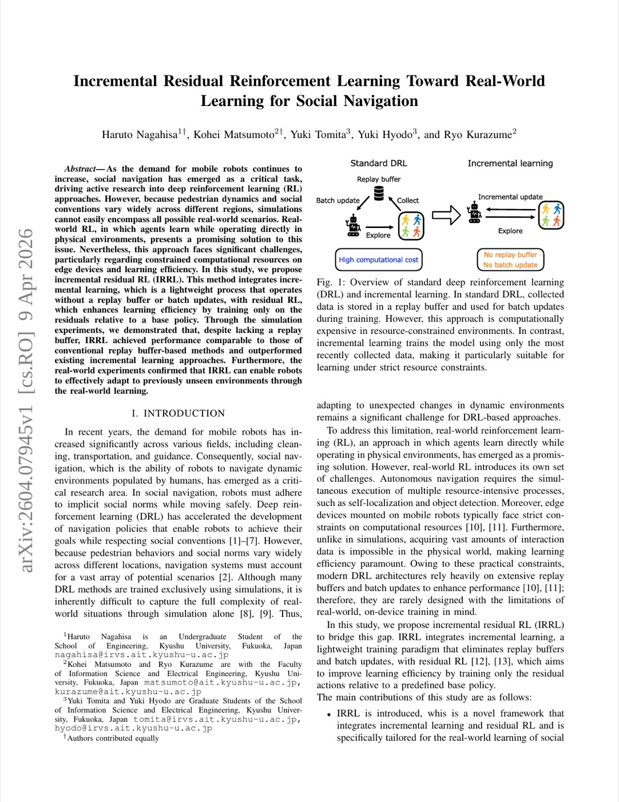
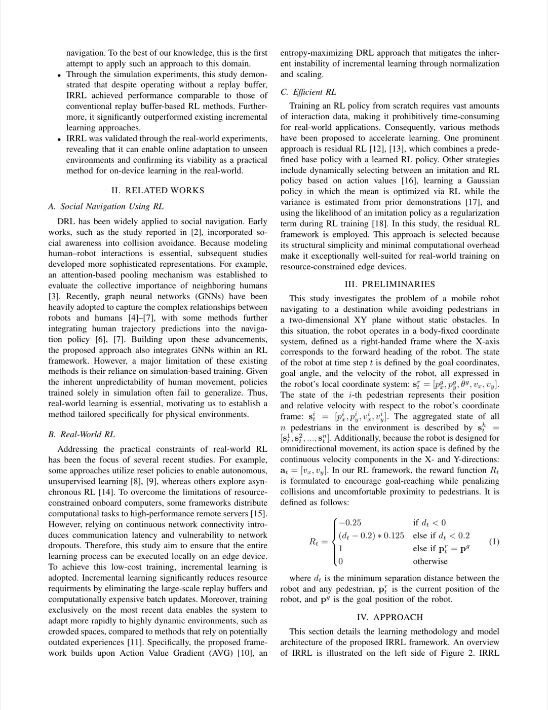
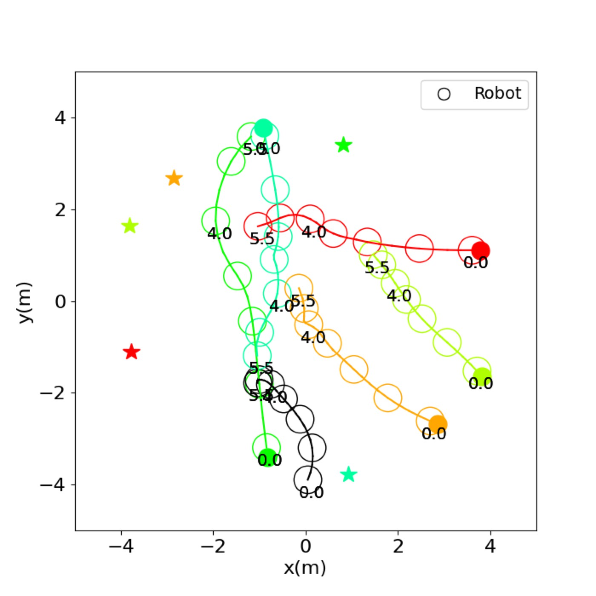
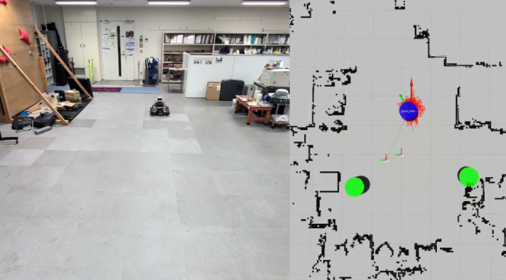
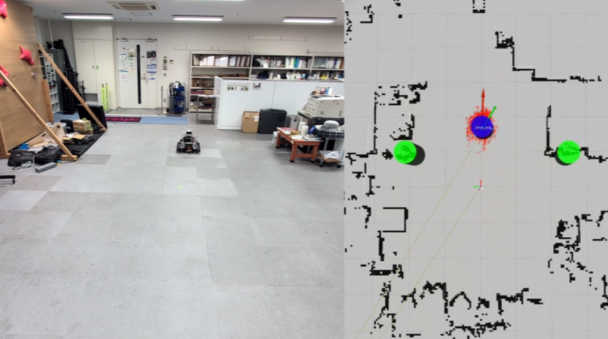

1. 개요 (Overview)
1.1 출판 정보 (Publication Information)
- 논문 제목 (Paper Title): Incremental Residual Reinforcement Learning Toward Real-World Learning for Social Navigation
- 저자 (Authors): Haruto Nagahisa, Kohei Matsumoto, Yuki Tomita, Yuki Hyodo, Ryo Kurazume
- 소속 (Affiliation): School of Engineering / Faculty of Information Science and Electrical Engineering, Kyushu University, Fukuoka, Japan
- 발표처 (Published): arXiv 프리프린트 (2026년 4월 9일)
- DOI: 미확인
- arXiv: https://arxiv.org/abs/2604.07945
- GitHub: 미공개
- Project Page: 미공개
1.2 연구 목표 (Research Objective)
IRRL은 이동 로봇이 실세계 환경에서 실시간으로 소셜 내비게이션을 학습할 수 있도록 하는 방법론을 제안한다. 소셜 내비게이션(social navigation)이란 보행자 등 사람과 함께하는 공간에서 로봇이 안전하고 자연스럽게 이동하는 것을 의미한다.
핵심 연구 질문:
"시뮬레이션에서 학습한 소셜 내비게이션 정책이 실세계에서 실패할 때, 엣지 디바이스의 제한된 연산 자원으로 실시간 적응이 가능한가?"
이를 위해 IRRL은 두 가지 경량 학습 기법을 결합한다:
- 증분 학습 (Incremental Learning): 리플레이 버퍼나 배치 업데이트 없이 단일 스텝마다 즉시 학습
- 잔차 강화학습 (Residual RL): 기존 베이스 정책(Social Force Model)을 수정하는 잔차만 학습

Fig 1. IRRL 전체 파이프라인. 시뮬레이션에서 사전 훈련 후, Mecanum 바퀴 로봇이 실제 보행자와의 상호작용을 통해 온라인 적응한다.2. 문제 정의 (Problem Definition)
2.1 도전과제 (Challenges)
A. 시뮬레이션과 현실의 격차 (Sim-to-Real Gap)
소셜 내비게이션 RL의 근본적 문제:
시뮬레이션 한계:
┌─────────────────────────────────────────────────────────┐
│ 1. 보행자 행동 다양성 부재 │
│ - SFM, ORCA 등 단순 모델 사용 │
│ - 실제 사람: 스마트폰 보다가 갑자기 방향 전환 │
│ 지역 문화별 간격 기준 다름 │
│ 예측 불가한 집단 행동 (무리 이동) │
│ │
│ 2. 환경 다양성 부재 │
│ - 시뮬레이터: 균일한 바닥, 완벽한 조명 │
│ - 실제: 반사 바닥, 그림자, 불규칙 지형 │
│ │
│ 3. 센서 노이즈 미반영 │
│ - 시뮬레이터: 완벽한 보행자 위치 제공 │
│ - 실제: LiDAR 노이즈, 감지 실패, 부분 폐색 │
└─────────────────────────────────────────────────────────┘
B. 엣지 디바이스의 연산 제약
실세계 RL의 기술적 장벽:
기존 RL (SAC, TD3):
리플레이 버퍼: 10^6개 전이 저장 → 수 GB RAM 필요
배치 크기: 256~1024 → GPU 필요
업데이트: 수천 번 역전파 → 고전력 소비
엣지 디바이스 (Jetson AGX Orin):
RAM: 32 GB (공유 메모리) — 로봇 전체 시스템과 공유
GPU: 2048 CUDA cores — 실시간 인식에도 사용
전력: 15~60W — 배터리 제한
실세계 RL 불가 요인:
→ 리플레이 버퍼 크기 ÷ 엣지 메모리 = 부적합
→ 배치 업데이트 ÷ 엣지 GPU = 실시간 어려움
C. 안전한 실세계 탐색
기존 RL 탐색(exploration)의 위험성:
- 학습 초기에 무작위 행동 → 보행자와 충돌 위험
- 안전 없이 탐색하면 물리적 위험 초래
- 배포 환경에서 탐색과 활용의 균형이 중요
2.2 핵심 해결책
IRRL의 핵심 통찰:
"기존 정책(SFM)은 이미 충분히 안전하다. 그 잔차만 학습하면 빠른 수렴과 안전성을 동시에 달성한다."
구체적으로:
- 베이스 정책(SFM): 충돌 회피의 기본 보장
- 잔차 정책(GATv2 RL): 실세계 보행자 패턴에 맞춘 미세 조정
- 증분 업데이트: 단일 스텝마다 즉시 적용, 리플레이 버퍼 불필요
- 정규화 기법: 학습 불안정성 억제
3. 핵심 방법론 (Core Methods)
3.1 문제 형식화 (Problem Formulation)
소셜 내비게이션을 연속 행동 공간의 MDP로 형식화:
상태 공간:
로봇 상태: s_t^r = [p_x^g, p_y^g, θ^g, v_x, v_y]
p_x^g, p_y^g: 로컬 좌표계에서 목표 위치
θ^g: 목표 방향
v_x, v_y: 현재 속도
보행자 i 상태: s_t^i = [p_x^i, p_y^i, v_x^i, v_y^i]
p_x^i, p_y^i: 로컬 좌표계에서 보행자 위치
v_x^i, v_y^i: 보행자 속도
전체 상태: S_t = [s_t^r; s_t^1; s_t^2; ...; s_t^K]
K: 감지된 보행자 수 (가변)
행동 공간:
a_t = [v_x, v_y] ∈ R^2 (연속 속도 명령)
|v| ≤ v_max = 1.0 m/s
보상 함수:
R_t = -0.25 if d_t < 0 (충돌)
= (d_t - 0.2) * 0.125 if 0 ≤ d_t < 0.2 (근접 패널티)
= 1.0 if p_t = p^g (목표 도달)
= 0 otherwise
d_t: 가장 가까운 보행자까지의 거리 - 로봇 반지름
3.2 베이스 정책: Social Force Model (SFM)
SFM은 물리적 힘 기반의 고전적 보행자 내비게이션 모델로, IRRL의 사전 지식 역할을 한다:
SFM 기본 힘:
F_total = F_goal + F_social + F_obstacle
목표 인력:
F_goal = (v_desired * e_goal - v_current) / τ_accel
e_goal: 목표 방향 단위 벡터
τ_accel: 가속 시간 상수
사회적 반발력 (보행자 j에서):
F_social^j = A * exp((r_ij - d_ij) / B) * e_ij
r_ij: 두 에이전트 반지름 합
d_ij: 두 에이전트 중심 거리
e_ij: 반발 방향 단위 벡터
A, B: 강도 및 범위 파라미터
베이스 행동:
a_t^base = clip(F_total * dt, -v_max, v_max)
SFM의 한계:
- 고정된 파라미터 A, B로 실세계 보행자 다양성 반영 불가
- 집단 이동, 사회적 규범(우측 통행 등) 미반영
- 예측 불가한 보행자 행동에 반응적이지 않음
3.3 잔차 강화학습 (Residual RL)
핵심 아이디어: SFM이 제공하는 기본 안전 행동에 잔차(residual)를 더하여 최적화
최종 행동:
u_t = a_t^base + a_t^res
a_t^base: SFM이 계산한 기본 행동
a_t^res: RL 정책이 학습하는 잔차 행동
클리핑:
u_t = clip(u_t, -v_max, v_max)
이 방식의 장점:
- 안전 기반 제공: SFM이 기본 충돌 회피를 담당 → 탐색 중 안전성 유지
- 빠른 수렴: 전체 행동 공간이 아닌 잔차만 학습 → 탐색 공간 대폭 축소
- 낮은 분산: 초기에 SFM 수준 성능 보장 → 학습 불안정성 감소
비교: 표준 RL vs 잔차 RL
학습 목표 탐색 공간 초기 안전성
표준 RL: 전체 정책 R^{n×|A|} 위험 (무작위)
잔차 RL (IRRL): 잔차만 R^{n×|A|}/부분공간 안전 (SFM 보장)
3.4 GATv2 기반 그래프 어텐션 정책 네트워크
보행자 수가 가변적인 입력을 처리하기 위해 그래프 어텐션 네트워크 활용:
그래프 구조:
노드: 로봇 (1개) + 보행자 (K개)
엣지: 로봇-보행자 간 (K개), 보행자-보행자 간 (K*(K-1)개)
GATv2 어텐션 메커니즘:
e_{ij} = a^T * LeakyReLU(W[h_i || h_j]) (원래 GAT)
GATv2: e_{ij} = a^T * LeakyReLU(W_l*h_i + W_r*h_j)
여기서 GATv2는 동적 그래프 어텐션으로,
원래 GAT의 정적 문제(h_i에만 의존하는 attention head)를 해결
어텐션 집계:
h_i' = σ(Σ_j α_{ij} * W * h_j)
α_{ij} = softmax_j(e_{ij})
결과:
로봇 노드의 최종 표현 h_r^final
→ Actor: 가우시안 평균/분산 → a_t^res 샘플링
→ Critic: 상태-행동 가치 Q(s_t, u_t)
GATv2의 선택 이유:
- 가변 수 보행자 처리 (고정 크기 입력 불필요)
- 보행자 간 사회적 상호작용 명시적 모델링
- 어텐션 가중치로 어떤 보행자가 중요한지 해석 가능
3.5 증분 엔트로피 최대화 RL (Incremental SAC)
표준 SAC의 배치 학습을 완전한 단일 스텝 증분 학습으로 전환:
3.5.1 표준 SAC 목적 함수
Actor 목적:
J_π(θ) = E_{s_t, a_t~π_θ}[α * log π_θ(a_t|s_t) - Q_φ(s_t, u_t)]
Critic 목적:
J_Q(φ) = E[δ^2]
δ = r_t + γ*(Q_φ(s_{t+1}, u_{t+1}) - α*log π_θ(a_{t+1}|s_{t+1})) - Q_φ(s_t, u_t)
온도 파라미터 α 자동 조정:
J_α = E[-α*(log π_θ(a_t|s_t) + H̄)] (H̄: 목표 엔트로피)
3.5.2 증분 학습의 핵심 기법
단순히 배치 크기를 1로 줄이면 학습 불안정:
- TD 오차가 보상 스케일에 따라 폭발하거나 소멸
- 연속적 경험의 높은 상관성으로 과적합
- 초기 탐색 부족
이를 해결하기 위한 IRRL의 세 가지 기법:
기법 1: 페널티메이트 정규화 (Penultimate Normalization)
정책 네트워크의 마지막 은닉층 전 L2 정규화:
ψ̂(S) = ψ(S) / ||ψ(S)||_2
효과:
- 피처 표현이 단위 하이퍼구 위에 위치
- 스케일 불변 표현 → 보상 스케일 변화에 강건
- 과도한 정책 변화 억제 (암묵적 신뢰 영역 역할)
기법 2: TD 오차 정규화 (TD Error Scaling)
TD 오차의 분산으로 정규화:
δ_scaled = δ / σ_δ
σ_δ: 온라인으로 추정된 TD 오차의 표준편차
갱신: σ_δ ← α_σ*σ_δ + (1-α_σ)*|δ| (지수 이동 평균)
효과:
- 이상치 TD 오차가 업데이트 규모를 폭발시키지 않음
- 다양한 환경/보상 스케일에 적응
- 리플레이 버퍼 없이도 안정적 학습
기법 3: 온라인 분산 추정 (Online Variance Estimation)
Welford의 온라인 알고리즘으로 실행 통계 유지:
n ← n + 1
δ_old ← mean
mean ← mean + (x - mean) / n
M2 ← M2 + (x - mean_old) * (x - mean)
variance ← M2 / (n - 1)
적용:
TD 오차, 보상, 상태 특성의 통계를 실시간 추적
배치 통계 없이도 정확한 정규화 수행
3.5.3 완전한 IRRL 알고리즘
알고리즘: IRRL 온라인 학습
초기화:
정책 π_θ (GATv2 Actor) ← 시뮬레이션 사전학습
가치 Q_φ (GATv2 Critic) ← 시뮬레이션 사전학습
타겟 Q_φ̄ ← φ̄ = φ
온도 α ← 자동 조정
온라인 통계: mean_δ, var_δ ← 0
매 환경 스텝 t에서:
1. 상태 관찰: S_t ← 보행자 감지 (LiDAR + DR-SPAAM)
2. 베이스 행동: a_t^base ← SFM(S_t)
3. 잔차 샘플링: a_t^res ~ π_θ(·|S_t)
4. 최종 행동: u_t = clip(a_t^base + a_t^res, -v_max, v_max)
5. 환경 실행: (s_{t+1}, r_t) ← env.step(u_t)
6. TD 오차: δ = r_t + γ*Q_φ̄(s_{t+1},u_{t+1}) - Q_φ(s_t,u_t)
7. TD 정규화: var_δ 갱신 → δ_scaled = δ/sqrt(var_δ)
8. Critic 업데이트: φ ← φ - lr_Q * ∇δ_scaled^2
9. Actor 업데이트: θ ← θ - lr_π * ∇[α*log π_θ - Q_φ]
10. 온도 업데이트: α ← α - lr_α * ∇J_α
11. 타겟 소프트 업데이트: φ̄ ← (1-τ)*φ̄ + τ*φ

Fig 2. IRRL 아키텍처. SFM 베이스 정책 + GATv2 잔차 정책의 결합. 실세계에서 단일 스텝마다 즉시 업데이트.4. 시스템 아키텍처 (System Architecture)
4.1 전체 파이프라인
하드웨어 입력:
Mecanum 바퀴 로봇
AR-XT-32-a 3D LiDAR (32채널, 360°)
Jetson AGX Orin 온보드 컴퓨터
ROS 2 Humble
│
▼
┌──────────────────────────────────────────────────────────┐
│ 인식 레이어 │
│ DR-SPAAM 보행자 감지기: │
│ - 3D LiDAR → 클러스터링 │
│ - 딥러닝 기반 보행자 분류 (실시간) │
│ - 출력: {위치, 속도} × K명 보행자 │
│ │
│ Monte Carlo 위치 추정 (emcl): │
│ - LiDAR + 사전 지도 → 로봇 위치/방향 추정 │
│ - 출력: {p_x, p_y, θ} 로봇 글로벌 자세 │
└──────────────────────────────────────────────────────────┘
│
▼
┌──────────────────────────────────────────────────────────┐
│ 상태 구성 레이어 │
│ 로봇 로컬 좌표계 변환: │
│ 글로벌 목표 → 로컬 상대 위치 [p_x^g, p_y^g, θ^g] │
│ 보행자 위치 → 로컬 상대 위치 [p_x^i, p_y^i, v_x^i, v_y^i] │
│ │
│ 그래프 구성: │
│ 노드: 로봇(1) + 보행자(K) │
│ 엣지: 상호작용 관계 │
└──────────────────────────────────────────────────────────┘
│
▼
┌──────────────────────────────────────────────────────────┐
│ 의사결정 레이어 │
│ 베이스 정책 (SFM): │
│ 보행자 반발력 + 목표 인력 → a_t^base │
│ │
│ 잔차 정책 (GATv2 Actor): │
│ 그래프 입력 → 어텐션 집계 → π_θ → a_t^res 샘플링 │
│ │
│ 최종 행동: u_t = clip(a_t^base + a_t^res, -v_max, v_max) │
└──────────────────────────────────────────────────────────┘
│
▼
┌──────────────────────────────────────────────────────────┐
│ 학습 레이어 (온라인) │
│ 매 스텝: │
│ (s_t, u_t, r_t, s_{t+1}) → TD 오차 계산 │
│ TD 정규화 → Critic/Actor 단일 스텝 업데이트 │
│ 온라인 통계 갱신 │
│ │
│ 메모리: ~수 MB (리플레이 버퍼 없음) │
│ 연산: 단일 역전파 (배치 없음) │
└──────────────────────────────────────────────────────────┘
│
▼
Mecanum 바퀴 속도 명령 [v_x, v_y] → 로봇 이동
4.2 실세계 학습 프로토콜
3단계 실세계 적응 절차:
┌────────────────────────────────────────────────────────┐
│ 단계 1: 시뮬레이션 사전 학습 │
│ 환경: CrowdNav (Python 시뮬레이터) │
│ 보행자: SFM 모델 2명 │
│ 에피소드: 100,000개 │
│ 결과: 기본 소셜 내비게이션 정책 │
└────────────────────────────────────────────────────────┘
│
▼
┌────────────────────────────────────────────────────────┐
│ 단계 2: 기준선 평가 (실세계) │
│ 환경: 실제 실험실/복도 │
│ 보행자: 2명의 비협조적 보행자 (무작위 이동) │
│ 에피소드: 30개 │
│ 결과: 시뮬레이션 정책의 실세계 성능 측정 (기준선) │
└────────────────────────────────────────────────────────┘
│
▼
┌────────────────────────────────────────────────────────┐
│ 단계 3: 실세계 온라인 학습 │
│ 환경: 실제 공간 + 가상 보행자 (하이브리드) │
│ 방법: 실제 공간에서 가상 보행자 시뮬레이션 병행 │
│ 에피소드: 100개 학습 │
│ 결과: 실세계에 적응된 정책 │
└────────────────────────────────────────────────────────┘
│
▼
┌────────────────────────────────────────────────────────┐
│ 최종 평가 │
│ 실제 보행자 조건: 30 에피소드 │
│ 가상 보행자 조건: 50 에피소드 │
│ 결과: 적응 후 성능 측정 │
└────────────────────────────────────────────────────────┘

Fig 3. IRRL 실세계 실험 환경. Mecanum 바퀴 로봇이 실제 보행자와 상호작용하며 온라인으로 학습한다.5. 실험 결과 및 성능 (Experimental Results)
5.1 데이터셋 (Datasets)
시뮬레이션 환경:
- CrowdNav 시뮬레이터: 원 교차(circle crossing) 시나리오
- 로봇과 보행자가 원 위에 배치되어 중심을 향해 이동
- 직경 6m 원, 5명 보행자
- 보행자 모델: SFM (사회적 힘 모델), ORCA (속도 장애물 상호 회피)
- 에피소드 길이: 최대 50초
실세계 환경:
- 규모: 실험실 공간 (정확한 크기 미명시)
- 보행자: 2명 실제 사람 (비협조적 — 무작위 이동)
- 추가: 가상 보행자 (물리 공간에서 시뮬레이션)
5.2 평가 지표 (Evaluation Metrics)
| 지표 | 설명 | 목표 |
|---|---|---|
| 성공률 (Success) | 충돌 없이 목표 도달 비율 (%) | 최대화 |
| 충돌률 (Collision) | 보행자와 충돌 비율 (%) | 최소화 |
| 실행 시간 (Time) | 목표까지 평균 이동 시간 (s) | 최소화 |
| 평균 수익 (Return) | 에피소드당 누적 보상 평균 | 최대화 |
5.3 정량적 결과 (Quantitative Results)
5.3.1 시뮬레이션 — SFM 보행자 (5명, 500 에피소드 × 5 시드)
| 방법 | 성공률 (%) | 충돌률 (%) | 시간 (s) | 수익 |
|---|---|---|---|---|
| SFM (베이스 정책) | 80.6 | 19.4 | 10.00 | 0.466 |
| SAC (리플레이 버퍼) | 99.9 | 0.1 | 7.79 | 0.690 |
| TD3 (리플레이 버퍼) | 100.0 | 0.0 | 7.78 | 0.691 |
| PPO (배치 업데이트) | 96.6 | 3.4 | 8.10 | 0.651 |
| Stream AC(λ) (증분) | 91.1 | 8.6 | 12.30 | 0.502 |
| SAC-1 (배치 크기=1) | 82.5 | 16.9 | 9.71 | 0.485 |
| TD3-1 (배치 크기=1) | 87.3 | 11.8 | 10.21 | 0.519 |
| IRRL (제안) | 98.8 | 1.2 | 8.25 | 0.666 |
분석: IRRL은 리플레이 버퍼 없이도 SAC(99.9%), TD3(100%)에 근접한 98.8% 성공률 달성. 기존 증분 방법(Stream AC: 91.1%, SAC-1: 82.5%, TD3-1: 87.3%)을 모두 크게 상회.
5.3.2 시뮬레이션 — ORCA 보행자 (5명, 500 에피소드 × 5 시드)
| 방법 | 성공률 (%) | 충돌률 (%) | 시간 (s) | 수익 |
|---|---|---|---|---|
| SFM (베이스 정책) | 78.6 | 21.4 | 8.71 | 0.473 |
| SAC (리플레이 버퍼) | 99.8 | 0.2 | 8.11 | 0.675 |
| TD3 (리플레이 버퍼) | 99.3 | 0.7 | 8.23 | 0.668 |
| PPO (배치 업데이트) | 98.5 | 1.4 | 8.73 | 0.645 |
| Stream AC(λ) (증분) | 90.6 | 9.3 | 14.11 | 0.455 |
| SAC-1 (배치 크기=1) | 91.4 | 8.4 | 9.56 | 0.554 |
| TD3-1 (배치 크기=1) | 91.0 | 5.8 | 15.56 | 0.445 |
| IRRL (제안) | 98.4 | 1.5 | 9.17 | 0.635 |
분석: ORCA 보행자에서도 유사한 성능. 특히 SAC-1(91.4%), TD3-1(91.0%)보다 7%p 이상 우수한 성공률. ORCA는 SFM보다 더 정교한 보행자 모델이며, IRRL은 두 조건 모두에서 일관성 유지.
5.3.3 실세계 실험 결과
실제 보행자 조건 (30 에피소드):
| 조건 | 성공률 (%) | 충돌률 (%) | 시간 (s) | 수익 |
|---|---|---|---|---|
| 온라인 학습 전 | 40.0 | 60.0 | 8.75 | 0.129 |
| 온라인 학습 후 | 60.0 | 40.0 | 9.01 | 0.299 |
가상 보행자 조건 (50 에피소드):
| 조건 | 성공률 (%) | 충돌률 (%) |
|---|---|---|
| 온라인 학습 전 | 52.0 | 48.0 |
| 온라인 학습 후 | 82.0 | 18.0 |
분석:
- 실제 보행자: 40% → 60% (+20%p) — 시뮬레이션 정책이 실세계에서 크게 저하됨을 확인하고, 온라인 학습으로 회복
- 가상 보행자: 52% → 82% (+30%p) — 더 많은 에피소드 수로 더 큰 개선
- 충돌 감소: 60% → 40% (-20%p) / 48% → 18% (-30%p)
실세계 적응이 성공적임을 입증하지만, 여전히 시뮬레이션 성능(~99%)에 비해 낮은 수준. 이는 실세계의 근본적 어려움(예측 불가한 보행자, 센서 노이즈)을 반영한다.

Fig 4. 시뮬레이션 학습 곡선. IRRL이 기존 증분 방법(Stream AC, SAC-1, TD3-1) 대비 빠른 수렴과 낮은 분산을 보임.
Fig 5. 실세계 실험 결과. 온라인 학습 전후 성공률 비교. 학습 후 실제 보행자 조건에서 20%p 개선.6. 핵심 기여점 (Key Contributions)
6.1 증분 학습과 잔차 RL의 시너지
혁신성: 두 가지 기존 기법(증분 학습 + 잔차 RL)의 결합이 개별 적용보다 훨씬 효과적
- 증분만: SAC-1(82.5%), TD3-1(87.3%) — 불안정한 단일 스텝 업데이트
- 잔차만: 리플레이 버퍼 필요로 엣지 배포 어려움
- IRRL (결합): 98.8% — 두 기법의 장점만 취함
6.2 엣지 디바이스 실시간 RL
혁신성: Jetson AGX Orin에서 3D LiDAR 기반 소셜 내비게이션 실시간 온라인 학습 최초 시연
- 리플레이 버퍼 메모리 불필요 (수 MB vs 수 GB)
- 배치 처리 없는 즉시 적응
- 로봇 전체 시스템과 병렬 동작 가능
6.3 페널티메이트 정규화 + TD 오차 정규화
혁신성: 배치 정규화 없이도 안정적인 단일 스텝 업데이트를 가능하게 하는 두 가지 기법
- 기존 단일 스텝 방법(SAC-1 등)의 불안정 원인 분석 및 해결
- 온라인 통계 추정으로 실시간 정규화 실현
6.4 실세계 RL 프로토콜
혁신성: 시뮬레이션 사전학습 → 실세계 온라인 학습의 단계적 프로토콜 제안
- 하이브리드 환경(실제 공간 + 가상 보행자) 활용
- 안전 초기화(SFM 기반)로 실세계 탐색 위험 최소화
7. 구현 상세 (Implementation Details)
7.1 네트워크 아키텍처
# GATv2 Actor (잔차 정책)
class GATv2Actor(nn.Module):
def __init__(self, robot_dim=5, ped_dim=4, hidden=64, heads=4):
self.robot_embed = nn.Linear(robot_dim, hidden)
self.ped_embed = nn.Linear(ped_dim, hidden)
# GATv2 레이어 (2개)
self.gat1 = GATv2Conv(hidden, hidden, heads=heads)
self.gat2 = GATv2Conv(hidden*heads, hidden, heads=1)
# 페널티메이트 정규화 위치
self.penultimate_norm = True
# 가우시안 출력 (평균/로그분산)
self.mean = nn.Linear(hidden, 2) # [v_x_res, v_y_res]
self.log_std = nn.Linear(hidden, 2)
def forward(self, state_graph):
# 노드 임베딩
h = self.embed(state_graph)
# GATv2 메시지 패싱
h = F.elu(self.gat1(h, edges))
h = self.gat2(h, edges)
# 페널티메이트 정규화
if self.penultimate_norm:
h_robot = h[0] / torch.norm(h[0], dim=-1, keepdim=True)
# 가우시안 파라미터 출력
mean = self.mean(h_robot)
log_std = self.log_std(h_robot).clamp(-20, 2)
return mean, log_std.exp()
# GATv2 Critic (상태-행동 가치)
class GATv2Critic(nn.Module):
# Actor와 유사 구조
# 행동 a_t^res를 추가 입력으로 포함
def forward(self, state_graph, action_res):
# ... 유사 GATv2 처리 후 스칼라 Q값 출력
return q_value
7.2 주요 하이퍼파라미터
# 학습 파라미터
lr_Q = 3e-4 # Critic 학습률
lr_pi = 3e-4 # Actor 학습률
lr_alpha = 1e-4 # 온도 학습률
gamma = 0.9 # 할인 인수
tau = 0.01 # 타겟 소프트 업데이트 계수
# 정규화
alpha_sigma = 0.99 # TD 오차 분산 추적 계수
# 네트워크
hidden_dim = 64 # GATv2 은닉 차원
attention_heads = 4 # GAT 어텐션 헤드 수
# 환경
v_max = 1.0 # 최대 로봇 속도 (m/s)
max_episode_steps = 250 # 최대 에피소드 스텝
dt = 0.25 # 제어 주기 (s)
# SFM 파라미터
A_sfm = 2.0 # 사회적 반발 강도
B_sfm = 0.3 # 사회적 반발 범위
tau_accel = 0.5 # 가속 시간 상수
7.3 하드웨어 사양
로봇 플랫폼:
플랫폼: Mecanum 바퀴 이동 로봇
온보드 컴퓨터: NVIDIA Jetson AGX Orin
LiDAR: AR-XT-32-a (32채널 3D LiDAR)
운영체제: ROS 2 Humble
소프트웨어 스택:
보행자 감지: DR-SPAAM (Deep Range Sensor-based Pedestrian AM)
위치 추정: emcl (Entropy-based Monte Carlo Localization)
딥러닝: PyTorch (CUDA 지원)
그래프 처리: PyTorch Geometric
7.4 학습 인프라
시뮬레이션 (사전학습):
플랫폼: CrowdNav (Python)
하드웨어: GPU 서버 (학습 가속)
소요: 100,000 에피소드
실세계 학습:
하드웨어: Jetson AGX Orin (온보드)
소요: 100 에피소드 (~2-3시간 추정)
메모리: ~50 MB (vs SAC 리플레이 버퍼 ~4 GB)
8. 고급 주제 (Advanced Topics)
8.1 증분 학습의 이론적 분석
증분 RL(단일 스텝 업데이트)이 기존 방법보다 불안정한 이유:
1. 높은 분산 (High Variance):
배치 기반 TD 오차: Var[δ_batch] = σ^2/B (B=배치 크기)
단일 스텝 TD 오차: Var[δ_single] = σ^2/1 = σ^2
분산이 B배 크므로 업데이트 노이즈 폭발
2. 높은 상관성 (High Correlation):
연속 경험 (s_t, s_{t+1}) 사이의 상관성:
Corr(δ_t, δ_{t+1}) → 1 (연속 환경에서)
→ 동일 방향의 반복 업데이트 → 과적합
3. TD 오차 폭발 (TD Error Explosion):
초기 Q 함수 추정이 나쁠 때:
δ_0 = r_0 + γ*Q_0(s_1) - Q_0(s_0) → 매우 큰 값
단일 스텝: Q ← Q - lr*δ_0 → 급격한 변화
→ 다음 δ_1도 폭발 → 연쇄 불안정
IRRL의 TD 정규화가 이를 해결:
δ_scaled = δ / σ_δ
초기: σ_δ ≈ |δ_0| (첫 TD 오차)
이후: σ_δ = α*σ_δ + (1-α)*|δ_t| (지수 이동 평균)
효과: |δ_scaled| ≈ 1 항상 유지 → 업데이트 스케일 안정
8.2 잔차 RL의 수렴 특성
잔차 RL이 표준 RL보다 빨리 수렴하는 이유:
유효 탐색 공간 축소:
표준 RL 탐색:
Q*(s, a)를 [0, R_max/(1-γ)] 범위에서 처음부터 추정
초기 무작위 탐색으로 많은 에피소드 필요
잔차 RL 탐색:
Q*(s, a_base + a_res)를 추정
a_base가 이미 좋은 행동이면:
Q(s, a_base) ≈ Q*(s, a_base) (빠른 수렴)
잔차 a_res만 탐색 → 작은 공간에서 수렴
안전한 탐색:
a_base (SFM) ≈ 무작위 행동에 비해 안전한 행동
초기 탐색도 SFM을 따르므로 실세계 배치에서 충돌 감소
8.3 한계점 (Limitations)
1. 실세계 성능 갭:
- 시뮬레이션: 98.8% vs 실세계: 60%
- 이 갭은 여전히 크며, 단기간 온라인 학습(100 에피소드)으로만 완전히 해소되지 않음
- 더 많은 학습 에피소드 또는 도메인 랜덤화 필요
2. 보행자 수 확장성:
- 실험에서 2명 보행자만 사용
- 고밀도 군중(10명 이상)에서의 성능 미검증
- GATv2의 복잡도가 O(K^2) — 많은 보행자에서 계산 증가
3. 코드 미공개:
- 재현 가능한 구현 부재 → 비교 연구 어려움
- 실험 세부 사항(로봇 사양, 환경 레이아웃) 불충분
4. 장기적 학습 안정성:
- 온라인 학습 중 갑작스러운 환경 변화에 대한 망각(catastrophic forgetting) 우려
- 새 환경 적응 시 이전 환경 성능 저하 가능
5. 목표 도달 보장 없음:
- 학습 기반이므로 공식적 안전/완전성 보장 없음
- SANDO(공식 안전 정리)와 대비되는 약점
8.4 향후 연구 방향
- 더 큰 보행자 밀도: 10명 이상 군중에서 확장성 검증
- 다중 로봇: IRRL을 여러 로봇의 분산 소셜 내비게이션으로 확장
- 이종 에이전트: 보행자 외 자전거, 전동 킥보드 등 처리
- 망각 방지: Elastic Weight Consolidation 등 지속 학습 기법 통합
- 자연어 지시: 목표를 좌표 대신 언어로 지정하는 VLN과의 결합
9. 비교 분석 (Comparative Analysis)
9.1 기존 리뷰 논문과의 비교
| 특성 | HEIGHT (T-ASE 2025) | NeuPAN (T-RO 2025) | GRATE (IROS 2025) | IRRL (2026) |
|---|---|---|---|---|
| 연구 주제 | 군중+제약 내비게이션 | 포인트 클라우드 내비게이션 | 자율 탐색 | 소셜 내비게이션 실세계 적응 |
| 학습 방법 | PPO (배치 오프라인) | 모델 기반 학습 | DRL + Graph Transformer | 증분 온라인 RL |
| 베이스 모델 | 없음 (처음부터 학습) | 물리 기반 PAN | 없음 | SFM (잔차만 학습) |
| 리플레이 버퍼 | 필요 | 없음 | 필요 | 불필요 |
| 실세계 실험 | 있음 (실내 군중) | 있음 (사무실, 복도) | 있음 (실내 탐색) | 있음 (실제 보행자) |
| 온보드 학습 | 없음 | 없음 | 없음 | 있음 (Jetson AGX Orin) |
| 보행자 모델 | 이질적 그래프 (HH/RH/OA) | 없음 (정적 장애물) | 없음 | GATv2 (동적 보행자) |
| 코드 공개 | 제한적 | 있음 | 없음 | 없음 |
9.2 장단점 분석
HEIGHT 대비 IRRL:
- HEIGHT의 강점: 이질적 그래프로 로봇-인간, 인간-인간, 장애물-에이전트 상호작용 구별 모델링 — 더 풍부한 사회적 표현
- HEIGHT의 약점: 오프라인 학습, 실세계 배치 시 적응 없음
- IRRL의 강점: 온라인 실세계 적응 — HEIGHT가 다루지 못한 sim-to-real 갭 해소
- IRRL의 약점: 단순한 이질적 표현 (로봇-보행자만), 이질적 장애물 모델링 부재
- 결론: 두 논문은 상호 보완적. HEIGHT가 더 표현력 있는 사회적 모델, IRRL이 더 실용적인 적응 능력
NeuPAN 대비 IRRL:
- NeuPAN: 포인트 클라우드 → 제어 직접 매핑, 물리 기반 제약, 지도 없음
- IRRL: 보행자 추적 상태 기반, 소셜 상호작용 모델, 온라인 적응
- 차이: NeuPAN은 정적/동적 장애물 회피에 초점, IRRL은 사람과의 사회적 상호작용에 초점
- 상호 보완: NeuPAN의 포인트 클라우드 처리 + IRRL의 소셜 적응을 통합하면 강력한 시스템 가능
GRATE 대비 IRRL:
- GRATE: 탐색(exploration) 목적의 Graph Transformer DRL — 환경을 최대한 빠르게 탐색
- IRRL: 내비게이션(navigation) 목적의 증분 RL — 특정 목표를 향해 안전하게 이동
- 목적 자체가 다름 — 직접 비교 부적절
- 활용 시나리오: GRATE로 탐색 → IRRL로 사람과의 공존 내비게이션
9.3 실적용 가능성 평가
긍정 요소:
- 엣지 배포 가능: Jetson AGX Orin 수준의 컴퓨터로 실시간 학습 가능
- 코드 없이도 재현 가능한 방법: 표준 RL 프레임워크 위에 구현 가능
- 안전 초기화: SFM 베이스 정책으로 실세계 탐색 중 기본 안전성 보장
- 배터리 수명: 배치 처리 없어 전력 소비 낮음 → 장시간 운용 가능
부정 요소:
- 코드 미공개: 재현 및 비교 어려움
- 낮은 최종 성능: 실세계 60%는 상용화에 부족
- 제한된 실험 규모: 2명 보행자만 — 실제 공공 공간(수십 명) 검증 필요
- 비교 베이스라인 부족: HEIGHT, NeuPAN 등 최신 방법과 직접 비교 없음
9.4 연구 방향성 평가
IRRL은 로봇 내비게이션 연구의 중요한 트렌드를 반영한다:
1. 실세계 온라인 학습의 실용화:
- 시뮬레이션 학습이 실세계에서 실패하는 문제는 오래된 난제
- IRRL은 온라인 적응으로 이를 완화하는 실용적 접근
- 연산 효율성 강조가 실제 배포에 중요한 고려사항임을 상기
2. 잔차 RL 패러다임의 확장:
- 잔차 RL은 로봇 공학에서 점점 주목받는 패러다임
- 기존 컨트롤러(SFM, MPC) + 학습 기반 잔차의 결합은 안전성과 유연성의 균형
- IRRL은 이를 소셜 내비게이션에 최초 적용한 사례 중 하나
3. 한계: 실세계 성능이 60%에 머무는 것은 연구의 한계를 보여줌. 더 많은 학습 에피소드, 더 다양한 환경, 더 나은 도메인 적응 방법이 필요하다.
8.5 증분 학습의 이론적 한계와 IRRL의 해결책
온라인 RL(Incremental RL)은 이론적으로 수렴을 보장하기 어렵다. IRRL이 이를 어떻게 완화하는지 분석한다.
문제: i.i.d 가정 위반
표준 RL은 리플레이 버퍼로 i.i.d 샘플을 시뮬레이션
증분 RL: 연속 경험 (s_t, s_{t+1}) → 높은 자기상관
→ Bellman 잔차의 기대값이 실제 기대값과 괴리
IRRL의 완화:
1. 잔차 정책: 탐색 공간 축소 → 연속 경험의 다양성 증가
(SFM이 이미 목표를 향하므로 궤적이 다양하지 않음이 오히려 도움)
2. TD 정규화: 분산 폭발 억제 → 수렴 안정화
3. 소프트 타겟 업데이트 (τ=0.01): 타겟 Q 네트워크를 천천히 갱신
→ 이동 평균 효과 → 상관성 부분 완화
이론적 수렴 조건 (충분조건):
표준 TD: Σ_t α_t = ∞, Σ_t α_t^2 < ∞ (Robbins-Monro)
IRRL: 고정 학습률 사용이지만 TD 정규화가 효과적 학습률 조절
→ 실용적으로 수렴 관찰됨 (이론적 증명은 향후 과제)
임시 정책 분기(Policy Divergence) 방지:
잔차 RL의 안정화 효과:
표준 RL 정책 업데이트:
π ← π + α * ∇J(π) → 나쁜 방향으로 큰 스텝 가능
잔차 RL:
a_total = a_base + a_res
a_base가 이미 안전 → a_res가 아무리 나빠도
|a_total - a_base| = |a_res| ≤ v_max (클리핑)
→ 정책 공간에서 a_base 근방으로 제한
이는 신뢰 영역 방법(TRPO, PPO)과 유사한 효과를 암묵적으로 달성
8.6 실세계 RL의 안전성 고려
실제 로봇에서 RL을 수행할 때 가장 큰 우려는 학습 중 충돌이다. IRRL의 접근법:
안전 계층 구조:
레벨 1 (항상 활성): 물리적 충돌 방지
→ 로봇 자체 비상 정지 (LiDAR 0.3m 이내 물체 감지 시 정지)
레벨 2 (기본 정책): SFM 반발력
→ 보행자 0.5m 이내 접근 시 강한 반발력
→ 대부분의 충돌 방지
레벨 3 (학습 정책): IRRL 잔차
→ SFM 위에 미세 조정
→ 초기에 작은 잔차 (탐색 엔트로피 낮음)
탐색-활용 균형:
엔트로피 최대화 목표로 충분한 탐색 유지:
J(π) = E[Q(s,a)] + α*H(π)
α 자동 조정: 너무 결정적이면 α 감소 → 더 탐색
너무 무작위면 α 증가 → 더 활용
실세계 적용 시 추가 조치:
- 실험 전 환경 사람 제거 또는 가상 보행자로 초기 학습
- 단계적 보행자 밀도 증가 (curriculum)
- 비상 정지 버튼 연구원 대기
10. 참고 문헌 (References)
- SFM: Helbing & Molnár, "Social Force Model for Pedestrian Dynamics," Physical Review E, 1995
- ORCA: Van den Berg et al., "Reciprocal n-body Collision Avoidance," ISRR 2011
- GATv2: Brody et al., "How Attentive are Graph Attention Networks?" ICLR 2022
- SAC: Haarnoja et al., "Soft Actor-Critic: Off-Policy Maximum Entropy Deep Reinforcement Learning," ICML 2018
- DR-SPAAM: Jia et al., "DR-SPAAM: A Spatial-Attention and Auto-regressive Model for Person Detection in 2D Range Data," IROS 2020
- HEIGHT: Liu et al., "Heterogeneous Interaction Graph Transformer for Robot Navigation in Crowded and Constrained Environments," T-ASE 2025
- NeuPAN: Han et al., "NeuPAN: Direct Point Robot Navigation with End-to-End Model-based Learning," T-RO 2025
11. 결론 (Conclusion)
IRRL은 소셜 내비게이션 분야에서 실세계 온라인 학습의 실용적 가능성을 처음으로 엣지 디바이스 환경에서 시연한 의미 있는 연구다. 리플레이 버퍼 없이 98.8% 성공률(시뮬레이션)을 달성한 것은 증분 학습의 잠재력을 보여주며, 실세계에서의 온라인 적응(40%→60%)은 실제 배포 가능성을 시사한다.
혁신성 평가: 증분 학습과 잔차 RL의 결합이라는 아이디어는 간단하지만 효과적이다. 특히 TD 오차 정규화와 페널티메이트 정규화라는 두 가지 안정화 기법이 증분 학습의 핵심 문제를 해결한다. 이는 향후 다른 로봇 학습 도메인에도 적용 가능한 일반적 기여다.
실용적 의의: 배달 로봇, 안내 로봇, 청소 로봇 등 실내 서비스 로봇의 핵심 과제인 소셜 내비게이션에 직접 적용 가능하다. 지역별로 다른 보행자 행동 패턴에 온라인으로 적응하는 능력은 글로벌 배포에 필수적이다.
향후 연구: 더 많은 보행자, 더 다양한 환경, 코드 공개를 통한 재현성 확보가 이 연구의 가치를 더욱 높일 것이다. HEIGHT의 이질적 그래프 표현과 IRRL의 온라인 적응을 결합한 하이브리드 방법이 강력한 후속 연구가 될 것으로 전망한다.